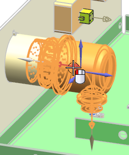
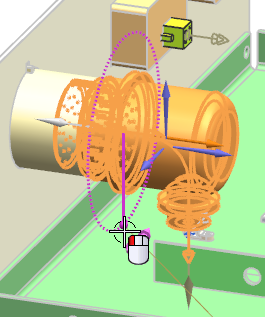
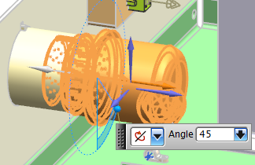
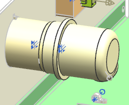

In the Part Options group, under Alternate Placement Options, click Routing Transform .
In the Transform group, from the Motion list, select Angle.
If necessary, click Specify Vector.
On your Selection bar, from the Type Filter, select Routing Objects.
Select the port on the backshell.

In the Results group, make sure Move Original is selected.
Move your cursor over the rotation handle.

Drag the handle counterclockwise to an approximate value of 45.

|
Tip |
You can also type the value directly into the on-screen input box, and 回车。 |
点击确定。

Click Cancel.